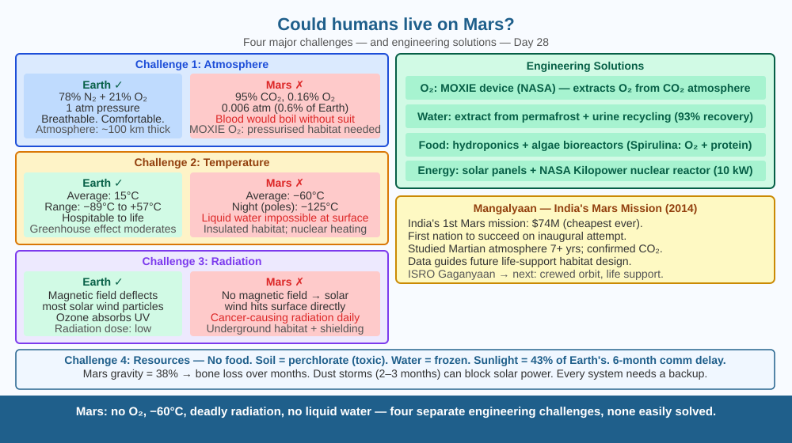

Discover the real scientific challenges of living on Mars — not from science fiction, but from actual planetary data — and understand which problems can be solved by engineering and which remain deeply hard.
Mars has a solid surface. Scientists have found evidence of ancient river beds, lake basins, and minerals that form in water. Its day is 24 hours and 37 minutes — almost the same as Earth's. Yet no human has ever gone there, and NASA and ISRO projects that might send people there are still decades away. What is so difficult about Mars that, despite all of humanity's technology, we haven't gone yet?
Mars is a fundamentally hostile world in four major ways:
1. No breathable atmosphere. Mars has an atmosphere, but it is 95% CO₂ and only 0.16% O₂ (Earth is 21% O₂). The total atmospheric pressure is only 0.6% of Earth's — about the same as the atmosphere at 35 km altitude on Earth (three times higher than any passenger aircraft flies). Without a pressurised suit, your blood would boil. You would lose consciousness in seconds and die in minutes.
2. Extreme cold. Average temperature: −60°C. Nights at the poles: −125°C. Equatorial midday: up to +20°C briefly. No liquid water anywhere on the surface today (it would instantly freeze or boil in the low pressure).
3. No magnetic field. Earth's magnetic field deflects deadly solar particles. Mars lost its magnetic field billions of years ago when its core cooled and solidified. Solar radiation and cosmic rays bombard the Martian surface at levels that would cause cancer in any human within months. Underground habitats would be essential.
4. Resource scarcity. No food. Soil is perchlorates (poisonous to humans). Water is frozen in polar ice caps and underground permafrost — must be extracted and purified. Energy must come from solar panels (Mars gets less sunlight than Earth) or nuclear reactors.
5. Dust storms. Mars experiences planet-wide dust storms that can last months. The 2018 global storm blocked sunlight so completely that it ended NASA's Opportunity rover mission — the solar-powered rover could no longer charge its batteries and permanently shut down. Human colonists would face the same loss of solar power, near-zero visibility, and a further drop in temperature for the duration of such storms.
What solutions exist: - Pressurised habitats with life support (O₂ produced by electrolysis of water or extracted from CO₂) - Thick shielding or underground tunnels for radiation - Nuclear power for heating and electricity - Hydroponics (growing food in water) in pressurised greenhouses - ISRO's Mangalyaan (Mars Orbiter Mission, 2014) studied Martian atmosphere — early step toward understanding conditions
Imagine moving to the highest point of the Himalayas, at the dead of a polar winter, during the peak of a radiation storm — permanently. You would need a pressurised suit even to step outside, insulated housing to survive the night, a radiation bunker, and your own food-growing facility. Now also imagine that if any single system fails — no one can send help for at least 6 months (how long a one-way trip to Mars takes with current technology). That is why Mars is so difficult.

The diagram shows Earth vs Mars side by side. Four comparison panels: (1) Atmosphere — Earth's thick blue haze vs Mars's thin orange wisp; (2) Temperature range — Earth's comfortable band vs Mars's extreme range; (3) Radiation — Earth's magnetic field shown deflecting solar wind vs Mars with arrows reaching surface; (4) Resources — Earth's abundant liquid water, O₂, food vs Mars's frozen water poles, CO₂ atmosphere, perchlorate soil. A bottom panel shows the engineered solutions (pressurised habitat, radiation shield, nuclear reactor, hydroponics greenhouse).
Check the label of any sparkling water bottle. It contains CO₂ under pressure. Shake gently, then slowly open: the CO₂ escapes. On Mars, any water released onto the surface would experience such low pressure that it would instantly boil (even at −10°C) — liquid water cannot exist at 0.6% of Earth's atmospheric pressure. Fill a cup with warm water. Compare this to imagining what happens to that water if you could magically lower the pressure to 600 Pa (0.6% of Earth's). It would fizz and freeze simultaneously — a process called sublimation-boiling.
Some scientists argue that we should terraform Mars — a multi-century project to artificially thicken the atmosphere, warm the planet, and release frozen CO₂ from the poles to create a runaway greenhouse effect. Estimated timescale: 1,000–10,000 years. Cost: incalculable. Ethical question: If there is any microbial life surviving in Martian subsurface brines, do we have the right to destroy a potentially unique biosphere for human colonisation? How would you resolve this conflict between exploration and preservation?
What is the main challenge that makes it difficult for humans to live on Mars without special equipment?
Why is understanding the conditions on Mars more useful than simply knowing humans cannot currently live there?
If scientists successfully created a pressurised habitat with breathable air on Mars, what remaining challenge would colonists still face?
Design a minimal Mars habitat for 4 people for a 2-year stay. Specify: (1) How they will get oxygen (choose one method and explain it); (2) How they will get water (one source and one purification method); (3) How they will get food (at least 2,000 calories per person per day from what source?); (4) How they will get energy; (5) How they will shield against radiation. Use one real technology for each — not science fiction. Show that you understand why each problem requires its own solution.
Mars's low gravity (38% of Earth's) means a 50 kg person would weigh only 19 kg on Mars. Over a long stay, without Earth's gravity pulling on bones and muscles, astronauts lose bone density and muscle mass rapidly — even with exercise. In 2–3 years on Mars, a person could lose enough bone density that returning to Earth would be agonising or impossible. This means we may need to design Mars habitats with centrifuges (spinning sections) to create artificial gravity — or find pharmaceutical ways to prevent bone loss. Some scientists argue that once humans are born on Mars, they may become physically unable to ever live on Earth.
Mars challenges: 95% CO₂ atmosphere (no breathable air), −60°C average, deadly radiation (no magnetic field), no liquid water, no food. Each challenge requires its own engineering solution — together they make Mars extremely difficult to colonise.